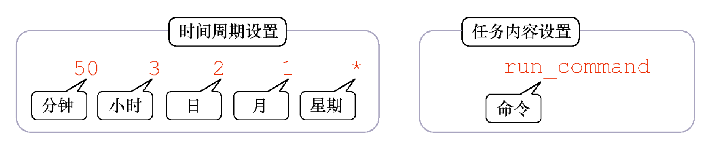
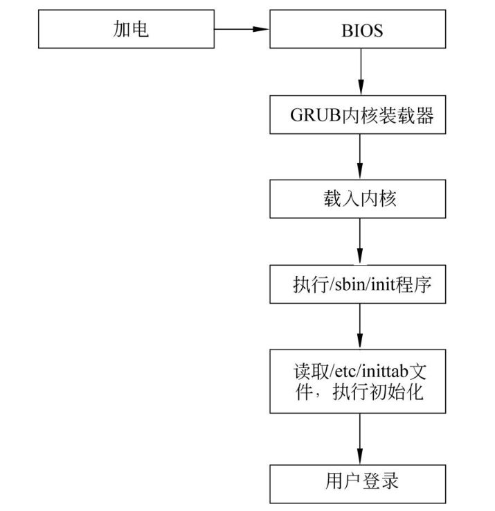

Contents
3.10. shell 技巧与杂项¶
3.10.1. cron计划任务¶
编辑计划任务的命令为“crontab -e”
查看当前计划任务的命令为“crontab -l”
删除某条计划任务的命令为“crontab -r”
在crontab命令中加上-u参数来编辑他人的计划任务

egcrontab -l
25 3 * * 1,3,5 /usr/bin/tar -czvf backup.tar.gz /home/wwwroot
0 1 * * 1-5 /usr/bin/rm -rf /tmp/*
0 */3 * * * /usr/local/apache2/apachectl restart
#表示每隔3个小时重启apache服务一次。
30 3 * * 6 /webdata/bin/backup.sh
#表示每周六的3点30分执行/webdata/bin/backup.sh脚本的操作。
0 0 1,20 * * fsck /dev/sdb8
#表示每个月的1号和20号检查/dev/sdb8磁盘设备。
10 5 */5 * * echo "">/usr/local/apache2/log/access_log
#表示每个月的5号、10号、15号、20号、25号、30号的5点10分执行清理apache日志操作。
* */1 * * * service httpd restart
#每小时重启httpd 进程
23-3/1 * * * service httpd restart
# 从23点开始到3点，每小时重启httpd 进程
30 23 * * * service httpd restart
#每天晚上23点30分重启httpd进程
30 23 1 * * service httpd restart
#每月的第一天晚上23点30分重启httpd进程
30 23 1 1 * service httpd restart
#每年1月1日的晚上23点30分重启httpd
30 23 * * 0 service httpd restart
#每周日晚上23点30分重启httpd进程
3.10.2. 标准输入输出重定向¶
- 输入输出
| 文件描述符 | 描述 | 映射关系 |
|---|---|---|
| 0 | 标准输入 | /dev/stdin -> /proc/self/fd/0 |
| 1 | 标准输出 | /dev/stdout -> /proc/self/fd/1 |
| 2 | 标准错误 | /dev/stderr -> /proc/self/fd/2 |
- 重定向
> ：符号左边输出作为右边的输入
>>: 符号左边输出追加右边的输入
< : 符号右边输出作为左边输入（标准输入）
<<: 符号右边输出追加左边输入
& : 重定向绑定符号
- /dev/null 文件
如果希望执行某个命令，但又不希望在屏幕上显示输出结果，那么可以将输出重定向到 /dev/null：
$ command > /dev/null
/dev/null 是一个特殊的文件，写入到它的内容都会被丢弃；如果尝试从该文件读取内容，那么什么也读不到。但是 /dev/null 文件非常有用，将命令的输出重定向到它，会起到"禁止输出"的效果。
如果希望屏蔽 stdout 和 stderr，可以这样写：
同时重定向命令的标准输出和标准错误的信息到/dev/null的语法如下所示：
$ command &> /dev/null
或
$ command >& /dev/null
或
$ command > /dev/null 2>&1
command &> /dev/null
command >& /dev/null
command > /dev/null 2>&1
command 2>&1 > /dev/null
- /dev/tty
/dev/tty是一个很实用的文件，当程序打开这个文件时，Uninx/Linux会自动将它重定向到当前所处的终端，
输出到此的信息只会显示在当前工作的显示器上。当某些时候（指定了脚本输出到/dev/null）时，而又想在当前终端上
显示一些很重要的信息，就可以调用这个设备,写入信息，这样做可以强制信息到终端。
$ a=`tty`
$ echo "aaa" >/dev/null > $a
aaa
$ tty
/dev/pty0
$ echo "aaa" > /dev/tty0
$ echo "aaa" > /dev/pty0
aaa
举例
#!/usr/bin/env bash
#usage:xxx
#scripts_name:xxx.sh
# author：xiaojian
# 设置用户和密码
printf "Enter User:"
read user
printf "Enter new passwd:"
#关闭自动打印输入字符的功能
stty -echo
read pass < /dev/tty #读取密码
echo
printf "Enter again:"
read pass2 < /dev/tty #再次读取密码
stty echo #打开输入字符的功能
if [[ "$pass" != "$pass2" ]]; then
echo "Two passwords do not match!"
else
echo $pass2 | passwd $user --stdin
echo "Passwd is Successful setup!"
fi
使用exec命令分配文件描述符¶
用户在命令后面使用重定向操作符的时候，重定向只对当前的命令有效。用户可以使用exec命令创建新的文件描述符，并且将文件描述符绑定到文件或者另外一个文件描述符或者文件
常用的重定向操作
重定向 说 明
exec 2> file 将所有命令的标准错误重定向到文件file
exec n< file 只读的方式打开名称为file的文件，并且使用文件描述符n，n是大于3的整数
exec n> file 以写入的方式打开名称为file的文件，并且使用文件描述符n，n是大于3的整数
exec n<> file 以读写方式打开文件file，并且使用文件描述符n，n是大于3的整数
exec n>&- 关闭文件描述符n
exec n>&m 使得文件描述符n成为文件描述符m的副本，即将文件描述符m复制到n
exec n>&- 关闭文件描述符n
exec 3文件输出例子
#!/bin/sh
# @Author: huxiaojian
# @Date: 2018-11-08 17:17:26
# @Last Modified by: hujianli
# @Last Modified time: 2018-11-09 13:45:07
NOW=$(date + %Y%m%d)
#定义输出文件
UTPUT="/tmp/sysinfo.${NOW}.log"
#定义文件描述符
exec 3> $OUTPUT
echo "---------------------------------------------" >&3
echo "System Info run @-@ $(date) for $(hostname)" >&3
echo "---------------------------------------------" >&3
echo "**********************************************" >&3
echo "************** Install Hared Disk ************" >&3
echo "**********************************************" >&3
fdisk -l | egrep "Disk /dev" >&3
echo "**********************************************" >&3
echo "************** CPU information ************" >&3
echo "**********************************************" >&3
echo "**********************************************" >&3
grep 'mode name' /proc/cpuinfo| uniq >&3
echo "**********************************************" >&3
echo "************* File System Disk Space Usage ****" >&3
echo "**********************************************" >&3
df -H >&3
echo "**********************************************" >&3
echo "************* Operating System Info ****" >&3
echo "**********************************************" >&3
uname -a >&3
[ -x /usr/bin/lsb_release ] && /usr/bin/lsb_release -a >&3
echo "/usr/bin/lsb_release not found"
echo "**********************************************" >&3
echo "************* Amount of Free And Used Memory ****" >&3
echo "**********************************************" >&3
free -m >&3
echo "**********************************************" >&3
echo "************* Top 10 Memory Eating Process ****" >&3
echo "**********************************************" >&3
ps auxf | sort -nr -k 4 | head -10 >&3
echo "**********************************************" >&3
echo "************* Top 10 CPU Eating Process ****" >&3
echo "**********************************************" >&3
ps auxf | sort -nr -k 3 | head -10 >&3
echo "**********************************************" >&3
echo "************* Network DEVICE information [eth0] ****" >&3
echo "**********************************************" >&3
netstat -i | grep -q eth0 && /sbin/ifconfig eth0 >&3
echo "**********************************************" >&3
exec 3> $OUTPUT
echo "---------------------------------------------" >&3
echo "System Info run @-@ $(date) for $(hostname)" >&3
echo "---------------------------------------------" >&3
echo "**********************************************" >&3
echo "************** Install Hared Disk ************" >&3
echo "**********************************************" >&3
fdisk -l | egrep "Disk /dev" >&3
echo "**********************************************" >&3
echo "************** CPU information ************" >&3
echo "**********************************************" >&3
grep 'mode name' /proc/cpuinfo| uniq >&3
echo "**********************************************" >&3
echo "************* File System Disk Space Usage ****" >&3
echo "**********************************************" >&3
df -H >&3
echo "**********************************************" >&3
echo "************* Operating System Info ****" >&3
echo "**********************************************" >&3
uname -a >&3
[ -x /usr/bin/lsb_release ] && /usr/bin/lsb_release -a >&3
echo "/usr/bin/lsb_release not found"
echo "**********************************************" >&3
echo "************* Amount of Free And Used Memory ****" >&3
echo "**********************************************" >&3
free -m >&3
echo "**********************************************" >&3
echo "************* Top 10 Memory Eating Process ****" >&3
echo "**********************************************" >&3
ps auxf | sort -nr -k 4 | head -10 >&3
echo "**********************************************" >&3
echo "************* Top 10 CPU Eating Process ****" >&3
echo "**********************************************" >&3
ps auxf | sort -nr -k 3 | head -10 >&3
echo "**********************************************" >&3
echo "************* Network DEVICE information [eth0] ****" >&3
echo "**********************************************" >&3
netstat -i | grep -q eth0 && /sbin/ifconfig eth0 >&3
echo "**********************************************" >&3
#关闭文件描述符3
exec 1>&3 #恢复标准输出
exec 3> &-
tee¶
tee命令把结果输出到标准输出，另一个副本输出到相应文件。
df -k | awk '{print $1}' | grep -v "文件系统" | tee a.txt
tee -a a.txt表示追加操作。
df -k | awk '{print $1}' | grep -v "文件系统" | tee -a a.txt
eg
exec 3<input.txt # 使用文件描述符3
$ echo this is a test line > input.txt
$ exec 3<input.txt
现在你就可以在命令中使用文件描述符 3 了。例如：
$ cat<&3
this is a test line
#创建一个用于写入（截断模式）的文件描述符：
$ exec 4>output.txt
$ echo newline >&4
$ cat output.txt
newline
#创建一个用于写入（追加模式）的文件描述符:
$ exec 5>>input.txt
$ echo appended line >&5
$ cat input.txt
newline
appended line
一般情况下，每个 Unix/Linux 命令运行时都会打开三个文件：
标准输入文件(stdin)：stdin的文件描述符为0，Unix程序默认从stdin读取数据。
标准输出文件(stdout)：stdout 的文件描述符为1，Unix程序默认向stdout输出数据。
标准错误文件(stderr)：stderr的文件描述符为2，Unix程序会向stderr流中写入错误信息。
默认情况下，command > file 将 stdout 重定向到 file，command < file 将stdin 重定向到 file。
cmd > file 把标准输出重定向到新文件中
cmd >> file 追加
cmd > file 2>&1 标准出错也重定向到1所指向的file里
cmd >> file 2>&1
cmd < file1 > file2 输入输出都定向到文件里
cmd < &fd 把文件描述符fd作为标准输入
cmd > &fd 把文件描述符fd作为标准输出
cmd < &- 关闭标准输入
如果希望 stderr 重定向到 file，可以这样写：
$ command 2 > file
如果希望 stderr 追加到 file 文件末尾，可以这样写：
$ command 2 >> file
#2 表示标准错误文件(stderr)。
如果希望将 stdout 和 stderr 合并后重定向到 file，可以这样写：
$ command &>file
或者
# 将错误输出转为标准输出，然后一同定向到一个文件
$ command > file 2>&1
或者
如果希望对 stdin 和 stdout 都重定向，可以这样写：
$ command >> file 2>&1
command 命令将 stdin 重定向到 file1，将 stdout 重定向到 file2。
$ command < file1 >file2
eg: - 从文件输入
#!/usr/bin/env bash
if [ $# -ne 1 ]; then
echo "Usage: $0 FILEPATH"
exit
fi
file=$1
#第一个参数为输入文件，并读取2行内容
{
read line1
read line2
} < $file
echo "First line in $file is $line1"
echo "Second line in $file is $line2"
exit 0
- 文件IO标识符示例
#!/usr/bin/env bash
标准输入（stdin）、标准输出（stdout）、标准错误输出（stderr），分别用文件标识符0、1、2来标识
如果要为进程打开其他的输入输出，则需要从整数3开始标识。
默认情况下，标准输入为键盘，标准输出和错误输出为显示器。
exec 5>file
#使用文件描述符5的命令
exec 5>&-
# 接下来的命令不再需要使用文件描述符5
#在文件描述符4上打开用于读写的文件/tmp/file
exec 4<> /tmp/file
#从文件描述符4读取前3个字符
read -n 3 var <& 4
echo $var
echo -n + tow >& 4
exec 4>&-
cat /tmp/file
one+two
#要将标准输出和标准错误同时定向到同一个文件中，可使用如下命令：
COMMAND > stdout_stderr.txt 2>&1
or
COMMAND &> stdout_stderr.txt
COMMAND > stdout.txt &> /dev/null #屏幕上不显示任何输出
find / -type f -name *.txt > /dev/null 2>&1 #屏幕上不显示任何输出
#使用块记录日志
{
...
...
} > $LOGFILE 2>&1
#将file文件作为标准输出
$ exec > 1.txt
huxiaojian@DESKTOP-EKCVIQ7 ~
$ echo "aa"
huxiaojian@DESKTOP-EKCVIQ7 ~
$ whoami
huxiaojian@DESKTOP-EKCVIQ7 ~
$ ps aux
huxiaojian@DESKTOP-EKCVIQ7 ~
$ exec >/dev/tty
huxiaojian@DESKTOP-EKCVIQ7 ~
$ ps aux
PID PPID PGID WINPID TTY UID STIME COMMAND
10684 11620 10684 16140 pty0 197609 12:44:23 /usr/bin/ps
11620 8952 11620 8128 pty0 197609 11:56:23 /usr/bin/bash
8952 1 8952 8952 ? 197609 11:56:23 /usr/bin/mintty
huxiaojian@DESKTOP-EKCVIQ7 ~
$ cat 1.txt
aa
huxiaojian
PID PPID PGID WINPID TTY UID STIME COMMAND
16616 11620 16616 11180 pty0 197609 12:44:10 /usr/bin/ps
11620 8952 11620 8128 pty0 197609 11:56:23 /usr/bin/bash
8952 1 8952 8952 ? 197609 11:56:23 /usr/bin/mintty
#aaa.txt文件并指定标识符为3，
huxiaojian@DESKTOP-EKCVIQ7 ~
$ cat aaa.txt
b
d
c
e
f
g
huxiaojian@DESKTOP-EKCVIQ7 ~
$ exec 3<aaa.txt
huxiaojian@DESKTOP-EKCVIQ7 ~
$ sort <&3
b
c
d
e
f
g
#-----------------------------------------------------------------------------
#将写入指定文件标识符的内容写入指定文件
#-----------------------------------------------------------------------------
#打开/关闭文件标识符
$ exec 3>aaa.txt
huxiaojian@DESKTOP-EKCVIQ7 /home
$ cat aaa.txt
huxiaojian@DESKTOP-EKCVIQ7 /home
$ echo "hello word11 " >&3
huxiaojian@DESKTOP-EKCVIQ7 /home
$ echo "hello word12 " >&3
huxiaojian@DESKTOP-EKCVIQ7 /home
$ echo "hello word13 " >&3
huxiaojian@DESKTOP-EKCVIQ7 /home
$ exec 3>&- #关闭文件标识符
huxiaojian@DESKTOP-EKCVIQ7 /home
$ cat aaa.txt
hello word11
hello word12
hello word13
#------------------------------------------------------------
#创建文件标识符的拷贝 标识符3和4都指向同一个文件
#------------------------------------------------------------
[root@iZuf6i0q7nfqv3ii5lhz0mZ home]# exec 3>aaa.sh
[root@iZuf6i0q7nfqv3ii5lhz0mZ home]# exec 4<3&
[root@iZuf6i0q7nfqv3ii5lhz0mZ home]# echo "this is &3" >&3
[root@iZuf6i0q7nfqv3ii5lhz0mZ home]# echo "this is &4" >&4
[root@iZuf6i0q7nfqv3ii5lhz0mZ home]# echo "this is &34" >&4
[root@iZuf6i0q7nfqv3ii5lhz0mZ home]# echo "this is &34(2)" >&3
[root@iZuf6i0q7nfqv3ii5lhz0mZ home]# exec 3>&-
[root@iZuf6i0q7nfqv3ii5lhz0mZ home]# cat aaa.sh
this is &3
this is &4
this is &34
this is &34(2)
root@iZuf6i0q7nfqv3ii5lhz0mZ home]# exec 3>hujianli.log
[root@iZuf6i0q7nfqv3ii5lhz0mZ home]# exec 4<&3
[root@iZuf6i0q7nfqv3ii5lhz0mZ home]# echo "&3 input " > &3
-bash: syntax error near unexpected token `&'
[root@iZuf6i0q7nfqv3ii5lhz0mZ home]# echo "&3 input " >&3
[root@iZuf6i0q7nfqv3ii5lhz0mZ home]# echo "&4 input " >&3
[root@iZuf6i0q7nfqv3ii5lhz0mZ home]# echo "&3-1 input " >&3
[root@iZuf6i0q7nfqv3ii5lhz0mZ home]# echo "&4-2 input " >&3
[root@iZuf6i0q7nfqv3ii5lhz0mZ home]# exec 3>&-
[root@iZuf6i0q7nfqv3ii5lhz0mZ home]# exec 4>&-
[root@iZuf6i0q7nfqv3ii5lhz0mZ home]# cat hujianli.log
&3 input
&4 input
&3-1 input
&4-2 input
#-------------------------------------------------------
# 同时读取和写入数据到文件中
#-------------------------------------------------------
#!/usr/bin/env bash
#usage:xxx
#scripts_name:xxx.sh
#开启描述符3，用于读取信息
exec 3< test.txt
#卡其描述符4，用于写入信息
exec 4> output.txt
# 读取描述符3中的2行数据
read -u 3 a
read -u 3 b
# 屏幕上输出读取的数据
echo "Data read from fd # 3:"
# 打印变量a和b的值
echo $a
echo $b
echo "Writing data read from fd 3 to fd 4....."
# 在文件描述符4上向文件/temp/output.txt写入数据
echo "Field #1 - $a " >&4
echo "Field #2 - $b " >&4
# 关闭文件描述符3
exec 3<&-
#关闭文件描述符4
exec 4<&-
#-----------------------------------------------------------
# 创建文件标识符的拷贝
#-----------------------------------------------------------
[root@iZuf6i0q7nfqv3ii5lhz0mZ home]# cd /dev/fd/
[root@iZuf6i0q7nfqv3ii5lhz0mZ fd]# ll
total 0
lrwx------ 1 root root 64 Nov 22 10:55 0 -> /dev/pts/1
lrwx------ 1 root root 64 Nov 22 10:55 1 -> /dev/pts/1
lrwx------ 1 root root 64 Nov 22 10:55 2 -> /dev/pts/1
lrwx------ 1 root root 64 Nov 22 13:05 255 -> /dev/pts/1
[root@iZuf6i0q7nfqv3ii5lhz0mZ fd]# exec 3</home/hujianli.log
[root@iZuf6i0q7nfqv3ii5lhz0mZ fd]# exec 4<&3
[root@iZuf6i0q7nfqv3ii5lhz0mZ fd]# ll
total 0
lrwx------ 1 root root 64 Nov 22 10:55 0 -> /dev/pts/1
lrwx------ 1 root root 64 Nov 22 10:55 1 -> /dev/pts/1
lrwx------ 1 root root 64 Nov 22 10:55 2 -> /dev/pts/1
lrwx------ 1 root root 64 Nov 22 13:05 255 -> /dev/pts/1
lr-x------ 1 root root 64 Nov 22 10:55 3 -> /home/hujianli.log
lr-x------ 1 root root 64 Nov 22 13:05 4 -> /home/hujianli.log
[root@iZuf6i0q7nfqv3ii5lhz0mZ fd]# cat 3
&3 input
&4 input
&3-1 input
&4-2 input
[root@iZuf6i0q7nfqv3ii5lhz0mZ fd]# cat 4
&3 input
&4 input
&3-1 input
&4-2 input
#------------------------------------------------------------
# 小结
#-----------------------------------------------------------
给一个输入文件指定一个文件描述符的语法是：exec [n]< file。
给一个输出文件指定一个文件描述符的语法是：$ exec [n]> file。
关闭文件描述符的语法是：[n]<&- 或 [n]>&-。
符号“<>”是Bash中的菱形操作符，这个操作符用于打开一个可读写的操作符。
$ cat exec_read_write.sh
#!/bin/bash
echo "one two " >/tmp/file
#开启/tmp/file的读写，描述符4
exec 4<> /tmp/file
#读取文件描述符前3个字符给var变量
read -n 3 var <&4
echo $var
echo -n + >&4
echo 4>&-
3.10.3. Here Document¶
# 输出提示信息
cat <<End-of-message
8 -------------------------------------
9 This is line 1 of the message.
10 This is line 2 of the message.
11 This is line 3 of the message.
12 This is line 4 of the message.
13 This is the last line of the message.
14 -------------------------------------
End-of-message
# <<-LimitString可以抑制输出时前边的tab(不是空格). 这可以增加一个脚本的可读性.
cat <<-ENDOFMESSAGE
This is line 1 of the message.
This is line 2 of the message.
This is line 3 of the message.
This is line 4 of the message.
This is the last line of the message.
ENDOFMESSAGE
#关闭参数替换
NAME="John Doe"
RESPONDENT="the author of this fine script"
cat <<'Endofmessage'
Hello, there, $NAME.
Greetings to you, $NAME, from $RESPONDENT.
Endofmessage
或者
cat <<\Endofmessage
Hello, there, $NAME.
Greetings to you, $NAME, from $RESPONDENT.
Endofmessage
举例说明：
cat > file.txt <<EOF
context
EOF
ls aa >/dev/null 2>&1
#创建文件
cat << EOF > foo.sh
printf "%s was here" "$name"
EOF
cat >> foo.sh <<EOF
printf "%s was here" "$name"
EOF
#重定向到文件
sudo mkdir -p /etc/docker
sudo tee /etc/docker/daemon.json <<-'EOF'
{
"registry-mirrors": ["https://du8c1in9.mirror.aliyuncs.com"]
}
EOF
sudo systemctl daemon-reload
sudo systemctl restart docker
一个Here Document的示例
usage() {
cat <<-EOF
usage: command [-x] [-v] [-z] [file ...]
A short explanation of the operation goes here.
It might be a few lines long, but shouldn't be excessive.
EOF
}
3.10.4. 常见小技巧¶
stty关闭回显¶
#!/usr/bin/env bash
#usage:xxx
#scripts_name:xxx.sh
echo -e "Enter password:"
# 在读取密码前禁止回显
stty -echo
read password
# 重新允许回显
stty echo
echo
echo -e "$password"
echo Password read.
计算脚本执行时间¶
#!/bin/bash
# 文件名: time_take.sh
start=$(date +%s)
commands;
statements;
end=$(date +%s)
difference=$(( end - start))
echo Time taken to execute commands is $difference seconds.
eg
$ cat test3.sh
#!/bin/bash
start=$(date +%s)
sleep 3
end=$(date +%s)
echo -e "speed $((end - start)) times....."
3.10.5. 常用命令使用方法¶
持续执行命令直至成功才退出¶
repeat函数
repeat() { while :; do $@ && return; sleep 30; done }
# 间隔30s就去下载tar.gz包，直至下载成功。
repeat wget -c http://www.example.com/software-0.1.tar.gz
cut 选取文本列¶
cut命令的基本语法如下：
cut option... [file]...
在上面的语法中，option表示选项，cut命令常用的选项如下所列。
-b：只选择指定的字节。
-c：只选择指定的字符。
-d：自定义列分隔符，默认值为制表符。
-f：只选择列表中指定的文本列，文本列用列号表示，多个列之间用逗号隔开。
-n：取消分隔多字节字符。
-s：不输出不包含列分隔符的行。
file参数表示要处理的文件列表，多个文件名之间用空格分隔。
tr:替换或删除字符¶
tr: 转换字符或删除字符
tr '集合1' '集合2'
tr -d '字符集合'
# 压缩重复字符
result='tr -s "[a-z]" < demo9.txt'
# 删除空白行
result='cat demo10.txt | tr -s ["\n"]'
# 将当前目录在的所有文件的文件名转为大写
for file in 'ls';do
echo "$file" | tr 'a-z' 'A-Z'
done
# 删除数字和冒号
result='tr -d "[0-9][:]" < demo11.txt'
$ tr 'a-z' 'A-Z' <a.txt >a1.txt # 将文本内容转换为大写
$ tr '{}' '()' <test.txt >newfile.txt # 将文本的大括号转为小括号
$ tr '{}' '\[]' <test.txt >newfile.txt # 将文本的大括号转为中括号
sort¶
按字符进行比较
sort [option] file...
-f: 忽略字符大小写；
-n: 比较数值大小；
-t: 指定分隔符
-k: 指定分隔后进行比较字段
-u: 重复的行，只显示一次；
date:显示系统时间¶
时间加减：
显示前 30 秒：date -d '-30 second' +'%F %T'
显示前一分钟：date -d '-1 minute' +'%F %T'
显示前一个时间：date -d '-1 hour' +'%F %T'
显示前一个天：date -d '-1 day' +'%F %T'
显示上一周：date -d '-1 week' +'%F %T'
显示上一个月日期：date -d '-1 month' +%F
显示上一年日期：date -d '-1 year' +%F
或
显示前一天日期：date -d yesterday +%F
显示后一天日期：date -d tomorrow +%F
tee¶
tee命令把结果输出到标准输出，另一个副本输出到相应文件。
df -k | awk '{print $1}' | grep -v "文件系统" | tee a.txt
tee -a a.txt表示追加操作。
df -k | awk '{print $1}' | grep -v "文件系统" | tee -a a.txt
脚本编写注意事项¶
1）开头加解释器：#!/bin/bash
2）语法缩进，使用四个空格；多加注释说明。
3）命名建议规则：变量名大写、局部变量小写，函数名小写，名字体现出实际作用。
4）默认变量是全局的，在函数中变量 local 指定为局部变量，避免污染其他作用域。
5）有两个命令能帮助我调试脚本：set -e 遇到执行非 0 时退出脚本，set -x 和 set +x 打印执行过程。set-x 和set+x常用于调试函数。
set -x
function(){
}
set +x
6）写脚本一定先测试再到生产上。
set 的一些用法：
set -x ：在执行时显示参数和命令。
set +x ：禁止调试。
set -v ：当命令进行读取时显示输入。
set +v ：禁止打印输入。
脚本开头执行时，执行如下命令， 在执行过程中若遇到使用了未定义的变量或命令返回值为非零，将直接报错退出：
set -eu set -euo pipefail
3.10.6. Shell脚本的调试技术¶
使用echo命令调试脚本¶
echo命令是Shell编程中最简单的调试技术。当用户需要验证程序中某个变量的值时，就可以直接使用echo命令将该变量的值输出到屏幕。
#! /bin/bash
# 定义变量 a
a=1
# 当 a 的值等于 1 时
if [ "$a" -eq 1 ]
then
b=2
else
b=1
fi
c=3
echo "a=$a"
echo "b=$b"
echo "c=$c"
使用trap命令调试Shell脚本¶
trap命令可以捕获指定的信号，并且执行预定的命令，其基本语法如下：
trap 'command' signal
其中，参数command表示捕获指定的信号后要执行的命令，而参数signal表示指定的信号。
在Shell脚本执行的时候，会产生3个所谓的伪信号，分别为EXIT、ERR以及DEBUG。其中，EXIT信号在退出某个函数或者某个脚本执行完成时触发，ERR信号在某条命令返回非0状态时触发，DEBUG信号在脚本的每一条命令执行之前触发。
演示使用trap命令输出发生错误的行号以及退出状态码，代码如下：
#! /bin/bash
# 定义信号处理函数
ERRTRAP()
{
echo "[LINE:$1] Error:Command or function exited with status code $?"
}
# 定义函数
func()
{
# 返回值为 1
return 1
}
# 使用 trap 命令捕获 ERR 信号
trap 'ERRTRAP $LINENO' ERR
# 调用错误的命令
abc
# 调用函数
func
[root@192 chapter5]# sh sample01.sh
sample01.sh:行17: abc: 未找到命令
[LINE:17] Error:Command or function exited with status code 127
[LINE:11] Error:Command or function exited with status code 1
演示通过捕获DEBUG信号来进行程序调试的方法，代码如下：
#! /bin/bash
# 捕获 DEBUG 信号
trap 'echo "before execute line:$LINENO,a=$a,b=$b,c=$c"' DEBUG
# 定义变量 a
a=1
# 根据变量 a 的值初始化变量 b
if [ "$a" -eq 1 ]
then
b=2
else
b=1
fi
# 定义变量 c
c=3
echo "end"
[root@192 chapter5]# sh sample02.sh
before execute line:6,a=,b=,c=
before execute line:8,a=1,b=,c=
before execute line:10,a=1,b=,c=
before execute line:15,a=1,b=2,c=
before execute line:17,a=1,b=2,c=3
end
使用tee命令调试shell脚本¶
在普通的语句中，用户使用echo和trap命令就可以非常轻松地完成调试，但是对于管道或者重定向来说，使用上面两种方法就显得心有余而力不足，因为在管道的作用下，一些命令的输出结果将会直接成为下一个命令的输入，中间结果并不会显示在屏幕上，因此给程序调试带来了困难。
由于在实际开发过程中，管道和重定向在Shell脚本中使用得非常多。所以必须找到能够输出中间结果的方法。在这种情况下，tee命令就可以轻松地完成任务。tee命令会从标准输入读取数据，将其内容输出到标准输出设备，同时又可将内容保存成文件。
#! /bin/bash
# 将文件名转换为大写
list='ls -l | tee list.txt | awk '{print toupper($7)}'''
echo "$list"
使用钩子函数，调试shell脚本¶
在许多程序设计语言中，用户在调试程序的时候都可以设定一个开关变量，当该变量的值为真时，才输出调试信息；否则，不输出调试信息。例如用户可以设计以下代码：
if [ "$DEBUG" = "true" ]; then
输出调试信息
fi
只有当变量DEBUG的值为true时，才输出调试信息。这样的代码块称为调试钩子。在调试钩子中，用户可以输出任何调试信息。使用调试钩子，用户可以通过开关变量控制是否输出调试信息。这样的话，在开发过程中，可以将开关变量的值设置为真，便于程序的调试。当调试完成，需要发布脚本的时候，将开关变量的值设置为flase即可，无需再一条条地删除程序中的调试代码。
演示使用调试钩子调试程序的方法，代码如下：
#! /bin/bash
# 定义调试开关
export DEBUG=true
# 调试函数
DEBUG()
{
if [ "$DEBUG" == "true" ];then
$@
fi
}
a=1
# 调用调试函数
DEBUG echo "a=$a"
if [ "$a" -eq 1 ]
then
b=2
else
b=1
fi
# 调用调试函数
DEBUG echo "b=$b"
c=3
# 调用调试函数
DEBUG echo "c=$c"
[root@192 chapter5]# sh sample03.sh
a=1
b=2
c=3
从上面的执行结果可以得知，因为开关变量DEBUG的值为true，所以输出了相应的调试信息。如果将DEBUG变量的值设置为false，则上面的程序没有任何输出，用户可以自行验证。
[root@k8s-node1 centos]# _DEBUG=on ./gouzi.sh
I is 1
I is 2
I is 3
I is 4
I is 5
I is 6
I is 7
I is 8
I is 9
I is 10
[root@k8s-node1 centos]# ./gouzi.sh
[root@k8s-node1 centos]# cat gouzi.sh
#!/bin/bash
DEBUG() {
[ "$_DEBUG" == "on" ] && $@ || :
}
for i in {1..10};do
#set -x
DEBUG echo -e "I is $i"
#set +x
done
shell自带的调试选项¶
Shell提供了一些用于调试脚本的选项，如下所示：
| 参数 | 说明 |
|---|---|
| -n | 读一遍脚本中的命令但不执行，用于检查脚本中的语法错误 |
| -v | 一边执行脚本，一边将执行过的脚本命令打印到标准错误输出 |
| -x | 提供跟踪执行信息，将执行的每一条命令和结果依次打印出来 |
使用这些选项有三种方法，一是在命令行提供参数
$ sh -x ./script.sh
二是在脚本开头提供参数
#! /bin/sh -x
第三种方法是在脚本中用set命令启用或禁用参数
#! /bin/sh
if [ -z "$1" ]; then
set -x
echo "ERROR: Insufficient Args."
exit 1
set +x
fi
set -x和set +x分别表示启用和禁用-x参数， 这样可以只对脚本中的某一段进行跟踪调试。
3.10.7. 子shell¶
在子shell中执行命令¶
1．圆括号结构¶
当一组命令放在圆括号中时，该组命令会在一个子Shell环境中执行，其语法如下：
(command1;command2;command3;...)
在上面的语法中，command1、command2，以及command3等都是Shell命令，这些命令写在一行中，它们之间用分号隔开。
如果每一行只有一条命令，则可以省略分号，变成以下语法形式：
(
command1
command2
command3
...
)
演示子shell的使用
#!/bin/bash
echo
# 输出子 Shell 的层次
echo "Subshell level OUTSIDE subshell = $BASH_SUBSHELL"
echo
# 定义子 Shell 外面的变量
outer_variable=Outer
# 圆括号开始
(
# 输出子 Shell 的层次
echo "Subshell level INSIDE subshell = $BASH_SUBSHELL"
# 定义子 Shell 内的变量
inner_variable=Inner
# 在子 Shell 内输出圆括号里面定义的变量
echo "From subshell, \"inner_variable\" = $inner_variable"
# 在子 Shell 内输出圆括号外面定义的变量
echo "From subshell, \"outer\" = $outer_variable"
)
echo
# 输出子 Shell 级别
echo "Subshell level OUTSIDE subshell = $BASH_SUBSHELL"
echo
# 判断 inner_variable 变量是否已经定义
if [ -z "$inner_variable" ]
then
echo "inner_variable undefined in main body of shell"
else
echo "inner_variable defined in main body of shell"
fi
# 输出圆括号内定义的变量
echo "From main body of shell, \"inner_variable\" = $inner_variable"
演示将脚本中的部分代码放在后台执行的方法
#!/bin/bash
# 输出开始提示信息
echo "Before starting subshell"
# 圆括号结构开始
(
count=1
while [ $count -le 10 ]
do
echo "$count"
sleep 1
# 在 Shell 中修改循环变量的值
(( count++ ))
done
) &
echo "Finished"
2．后台执行或异步执行¶
在某些情况下，Shell命令需要较长的时间来执行，尤其是在处理大量的数据的时候。在这种情况下，用户可以将命令置于后台执行，而不必等待命令执行结束。
将命令置于后台执行的语法如下：
command&
其中，command表示要执行的命令，&操作符表示将前面的命令置于后台执行。在命令末尾追加&操作符之后，当前命令会由一个子Shell在后台执行。当前的Shell会立即获得控制权并且返回到命令行提示符。后台命令和当前的Shell是并行的，相互之间没有依赖及等待关系。这意味着，后台命令和当前Shell是异步的并行。
3.10.8. 自动化¶
开机自启动脚本¶
如果要添加为开机启动执行的脚本文件，可先将脚本复制或者软连接到/etc/init.d/目录下，然后用：
update-rc.d xxx defaults NN命令(NN为启动顺序)，
将脚本添加到初始化执行的队列中去。
注意如果脚本需要用到网络，则NN需设置一个比较大的数字，如99。
1) 将你的启动脚本复制到 /etc/init.d目录下,以下假设你的脚本文件名为 test。
2) 设置脚本文件的权限
$ sudo chmod 755 /etc/init.d/test
3) 执行如下命令将脚本放到启动脚本中去：
$ cd /etc/init.d
$ sudo update-rc.d test defaults 95
3.10.9. Shell脚本实战¶
更多示例可参考：shell 脚本示例
系统启动过程¶
从大的方面来讲，Linux系统的启动过程如图。当一个Linux系统启动的时候，首先是用户按下电源，接着电脑加电，然后执行BIOS中的固件程序，完成系统硬件的自检。当硬件自检没有发现问题之后，便调用内核装载器来载入系统内核。内核装载器又称为内核装载程序，目前比较流行的是GNU GRUB。GRUB是GRand Unified Bootloader的缩写，它是一个多重操作系统启动管理器，可以用来引导不同系统，例如Windows或者Linux等。
Linux启动过程

当Linux内核加载完成之后，便执行/sbin/init程序，创建系统中的第一个进程。init进程的进程ID为1，是Linux系统中所有进程的父进程。init进程会读取/etc/inittab、/etc/init/rc.conf以及/etc/init/rcS.conf等文件，执行一系列的初始化操作。然后执行/etc/rc.d目录中相应的子目录中的服务脚本，创建启动或者停止某项服务。
在Linux的启动过程中，有个文件发挥了非常重要的作用，该文件为一个Shell脚本文件，其名称为/etc/rc.d/rc。/etc/rc.d/rc的作用是根据不同的运行级别来启动或者停止服务。无论是对于初学者，还是有一定经验的读者来说，这个文件都是一个极好的范例，有兴趣的读者可以仔细地阅读这个文件的代码。
运行级别
所谓运行级别，是指UNIX或者Linux等类UNIX操作系统的不同运行模式。在不同的运行级别下，用户可以执行相应的操作，例如运行级别1表示单用户模式，在这种运行级别下，只允许root用户登录，不启动网络服务。运行级别的概念只用于System V流派的UNIX系统以及Linux系统，对于BSD流派的UNIX系统则不使用运行级别的概念。
在通常情况下，运行级别分为7级，分别使用0～6这7个数字来表示。典型的运行级别如下所述。
- 0：停机。
- 1：单用户模式，不启用网络，不启动各种服务，只允许root用户登录进行维护。
- 2：多用户模式，不启用网络，不启动各种服务。
- 3：多用户模式，除图形界面之外，各种网络服务都可以使用。
- 4：用户自定义。
- 5：带图形界面的多用户模式。
- 6：重新启动系统。
在Linux系统中，各个运行级别下面需要启动或者停止的服务的脚本都位于特定的目录中，这些目录都位于/etc目录中，其名称为/etc/rc0.d～/etc/rc6.d，分别对应上面7个运行级别。下面列出的是运行级别3所对应的目录下面的部分脚本文件列表：
[root@linux rc0.d]# ll /etc/rc3.d/
total 0
lrwxrwxrwx 1 root root 20 Apr 6 13:48 K01certmonger
-> ../init.d/certmonger
lrwxrwxrwx 1 root root 15 Apr 6 13:48 K01numad
-> ../init.d/numad
lrwxrwxrwx 1 root root 16 Apr 6 13:59 K01smartd
-> ../init.d/smartd
…
lrwxrwxrwx 1 root root 17 Mar 9 15:31 S01sysstat
-> ../init.d/sysstat
lrwxrwxrwx 1 root root 22 Apr 6 13:48 S02lvm2-monitor
-> ../init.d/lvm2-monitor
lrwxrwxrwx 1 root root 18 Apr 6 13:48 S05cgconfig
-> ../init.d/cgconfig
从上面的输出可以得知，/etc/rc3.d中的脚本文件实际上是/etc/init.d目录中的相应脚本文件的符号链接。这些符号链接的命名有着特定的规则，如果文件名的首字符为大写字母K，表示将要传递stop参数给脚本，以停止该服务。如果文件名的首字符为S，则表示将要传递start参数给脚本，以启动该服务。首字符后面的数字表示该脚本执行的顺序。例如，在上面的结果中，K01numad表示在运行级别3中，将传递stop参数给/etc/init.d/numad脚本文件，以停止numad服务。S01sysstat表示在运行级别3中，将传递start参数给/etc/init.d/sysstat脚本，以启动sysstat服务。
服务脚本的基本语法¶
在Linux系统中，服务脚本有固定的语法，通常情况下，服务脚本应该包括处理服务启动、服务停止、服务重新启动，以及查看服务状态的函数。另外，服务脚本还可以接受某些特定的参数，例如start、stop，以及restart等，并且根据这些参数调用不同的函数。
下面给出的是某个Linux系统中的Apache Web服务器的服务脚本，为了节省篇幅，省略了部分无关紧要的代码。
# 在当前 Shell 中执行定义公共函数的脚本
. /etc/rc.d/init.d/functions
#Apache 各组件的路径
apachectl=/usr/sbin/apachectl
httpd=${HTTPD-/usr/sbin/httpd}
prog=httpd
pidfile=${PIDFILE-/var/run/httpd/httpd.pid}
lockfile=${LOCKFILE-/var/lock/subsys/httpd}
# 脚本执行结果
RETVAL=0
# 停止服务的超时时间
STOP_TIMEOUT=${STOP_TIMEOUT-10}
# 定义启动服务的函数
start() {
echo -n $"Starting $prog: "
LANG=$HTTPD_LANG daemon --pidfile=${pidfile} $httpd $OPTIONS
RETVAL=$?
echo
[ $RETVAL = 0 ] && touch ${lockfile}
return $RETVAL
}
# 定义停止服务的函数
stop() {
echo -n $"Stopping $prog: "
killproc -p ${pidfile} -d ${STOP_TIMEOUT} $httpd
RETVAL=$?
echo
[ $RETVAL = 0 ] && rm -f ${lockfile} ${pidfile}
}
# 定义重新加载配置文件的函数
reload() {
echo -n $"Reloading $prog: "
if ! LANG=$HTTPD_LANG $httpd $OPTIONS -t >&/dev/null; then
RETVAL=6
echo $"not reloading due to configuration syntax error"
failure $"not reloading $httpd due to configuration syntax error"
else
# Force LSB behaviour from killproc
LSB=1 killproc -p ${pidfile} $httpd -HUP
RETVAL=$?
if [ $RETVAL -eq 7 ]; then
failure $"httpd shutdown"
fi
fi
echo
}
# 根据用户传递的参数执行不同的操作
case "$1" in
# 启动服务
start)
start
;;
# 停止服务
stop)
stop
;;
# 查看服务状态
status)
status -p ${pidfile} $httpd
RETVAL=$?
;;
# 重新启动服务
restart)
stop
start
;;
# 强制重新启动
force-reload|reload)
reload
;;
# 处理其他情况
*)
echo $"Usage: $prog {start|stop|restart|condrestart|try-restart|force-reload|reload|status|fullstatus|graceful|help|configtest}"
RETVAL=2
esac
exit $RETVAL
编写MySQL服务脚本
#!/bin/sh
#
# MySQL 服务脚本
# 指定运行级别以及优先级
# chkconfig: - 64 36
# description: MySQL database server.
#MySQL 服务主程序的路径
mysql="/usr/bin/mysqld_safe"
#MySQL 管理工具路径
mysqladmin="/usr/bin/mysqladmin"
# 定义获取 MySQL 选项的函数
get_mysql_option()
{
# 使用 my_print_defaults 命令输出各个选项
result='/usr/bin/my_print_defaults "$1" | sed -n "s/^--$2=//p" |tail -n 1'
# 如果文件不存在，则使用默认值
if [ -z "$result" ]; then
result="$3"
fi
}
# 数据库文件路径
get_mysql_option mysqld datadir "/var/lib/mysql"
datadir="$result"
#Socket 文件路径
get_mysql_option mysqld socket "$datadir/mysql.sock"
socketfile="$result"
# 日志文件路径
get_mysql_option mysqld_safe log-error "/var/log/mysqld.log"
errlogfile="$result"
# 进程 ID 文件路径
get_mysql_option mysqld_safe pid-file "/var/run/mysqld/mysqld.pid"
mypidfile="$result"
# 服务启动函数
start(){
# 如果程序不可执行，则直接退出
[ -x $mysql ] || exit 5
# 判断服务进程是否存在
/usr/bin/mysqladmin --socket="$socketfile" --user=mysql ping 2>&1
if [ $? = 0 ]; then
echo "mysql has been already running."
ret=0
else
if [ ! -d "$datadir/mysql" ] ; then
echo "mysql database does not exists."
exit 1
fi
$mysql --datadir="$datadir" --socket="$socketfile" --pid-file="$mypidfile" --basedir=/usr --user=mysql >/dev/null 2>&1 &
ret=$?
if [ $ret -eq 0 ]; then
touch $lockfile
else
echo "starting mysql failed."
fi
fi
return $ret
}
stop(){
# 如果进程文件不存在，则直接退出
if [ ! -f "$mypidfile" ]; then
echo "mysql is not running."
return 0
fi
# 从进程文件中获取进程 ID
mysqlpid='cat "$mypidfile"'
# 如果进程 ID 为整数，则调用 mysqladmin 停止 mysql 服务
if [ -n "$mysqlpid" ]; then
$mysqladmin --socket="$socketfile" --user=root shutdown
ret=$?
# 如果停止成功，则删除锁定文件和 Socket 文件
if [ $ret -eq 0 ]; then
rm -f $lockfile
rm -f "$socketfile"
echo "mysql stopped."
ret=0
else
echo "stopping mysql failed."
ret=1
fi
return $ret
}
restart(){
stop
start
}
# 根据参数值执行相应的操作
case "$1" in
# 启动服务
start)
start
;;
# 停止服务
stop)
stop
;;
# 查看状态
status)
if [ -n pidof "$procname" ]; then
echo "mysql is running."
fi
;;
# 重新启动
restart)
restart
;;
*)
echo $"Usage: $0 {start|stop|status|restart}"
exit 2
esac
exit $?
在上面的代码中，第6行需要特别说明一下。该行的作用是告诉chkconfig命令，当前的服务脚本可以在哪些运行级别下面执行。其中连字符-表示当前脚本适用于所有的运行级别。如果只想在某些运行级别下面执行，则可以直接用数字指定，例如：
# chkconfig: 345 64 36
表示当前脚本可以在3、4和5这3个运行级别下面运行。后面的2个数字分别表示当前脚本在启动和停止时的优先级。数值越小，优先级越高；反之，优先级越低。
当整个mysql脚本都编写完成之后，将其复制到/etc/init.d目录中，并且赋予可执行权限，命令如下：
[root@linux chapter15]# cp mysql /etc/init.d/
[root@linux chapter15]# chmod +x /etc/init.d/mysqld
接下来使用chkconfig命令更新系统服务，如下所示：
[root@linux chapter15]# chkconfig mysql on
最后，用户就可以使用service命令来启动、停止或者查看运行状态了，代码如下：
[root@linux chapter15]# service mysql start
[root@linux chapter15]# service mysql status
1. Apache服务器日志管理¶
#! /bin/bash
# 归档文件名生成函数
function filename()
{
timestamp=$(date +%Y%m%d%H%M%S)
echo "$1".$timestamp."tar"
}
# 过期日志归档函数
function archivelog()
{
archivefile='filename httpd_log'
archivedest=$1
if [ ! -d archivedest ];then
mkdir -p $archivedest
fi
cd /var/log/httpd
find . -mtime +1 -exec tar -rf $archivedest$archivefile {} \;
zip $archivedest$archivefile".zip" $archivedest$archivefile
if [ "$?" -eq 0 ]
then
rm -f $archivedest$archivefile
fi
return $?
}
# 已归档日志删除函数
function removearchivedlog()
{
cd /var/log/httpd
find . -mtime +1 -exec rm -f $archivedest$archivefile {} \;
}
# 将过期日志归档
archivelog "/root/chapter15/"
# 删除已归档日志
if [ "$?" -eq 0 ]
then
removearchivedlog
fi
exit 0
定时运行日志归档脚本
通常情况下，用户可以使用两种方法来实现脚本的定时运行。一种方法是使用sleep命令，另外一种方法是使用cron工具。
# 无限循环
while true
do
# 归档过期日志
archivelog "/root/chapter15/"
if [ "$?" -eq 0 ]
then
# 删除过期日志
removearchivedlog
fi
# 休眠 1 天
sleep 86400
done
为了使得归档操作能够不断地重复执行，将archivelog()和removearchivedlog()这两个函数的调用都放在了一个无限循环结构中。第13行使用sleep命令使进程每天执行一次，其中sleep命令以秒为单位。
修改完成之后，用户可以使用以下命令执行归档脚本：
[root@linux chapter15]# ./archivelog.sh &
Cron计划任务的方式
[root@linux log]# crontab -l
0 * * * * /root/chapter15/archivelog.sh
2 文件扫描校验¶
#!/bin/bash
#func:scan file
#md5sum -c $SCAN_FILE
SCAN_DIR=`echo $PATH |sed 's/:/ /g'`
SCAN_CMD=`which md5sum`
SCAN_FILE_FALL="/tmp/scan_$(date +%F%H%m)_fall.txt"
SCAN_FILE_BIN="/tmp/scan_$(date +%F%H%m)_bin.txt"
scan_fall_disk() {
echo "正在全盘扫描，请稍等！文件路径:$SCAN_FILE_FALL"
find / -type f -exec $SCAN_CMD \{\} \;>> $SCAN_FILE_FALL 2>/dev/null
}
scan_bin() {
echo "正在扫描PATH可执行文件，请稍等，文件路径：$SCAN_FILE_BIN"
for file in $SCAN_DIR
do
find $filae -type f -exec $SCAN_CMD \{\} \;>> $SCAN_FILE_BIN 2>/dev/null
done
}
main() {
[ $# -lt 1 ] && echo "请使用参数，1表示全盘扫描，2表示二进制可执行文件扫描"
read number
case $number in
1)
scan_fall_disk;;
2)
scan_bin;;
*)
echo "参数错误，1，表示全盘扫描，2表示二进制文件扫描"
esac
}
main
3 自定义垃圾回收¶
#!/bin/bash
# function:自定义rm命令，每天晚上定时清理
CMD_SCRIPTS=$HOME/.rm_scripts.sh
TRASH_DIR=$HOME/.TRASH_DIR
CRON_FILE=/var/spool/cron/root
BASHRC=$HOME/.bashrc
[ ! -d ${TRASH_DIR} ] && mkdir -p ${TRASH_DIR}
cat > $CMD_SCRIPTS <<EOF
PARA_CNT=\$#
TRASH_DIR=$TRASH_DIR
for i in \$*; do
DATE=\$(date +%F%T)
fileName=\$(basename \$i)
mv \$i \$TRASH_DIR/\$fileName.\$DATE
done
EOF
sed -i "s@$(grep 'alias rm=' $BASHRC)@alias rm='bash ${CMD_SCRIPTS}'@g" $BASHRC
source $HOME/.bashrc
echo "0 0 * * * rm -rf $TRASH_DIR/*" >> $CRON_FILE
echo "删除目录:$TRASH_DIR"
echo "删除脚本:$CMD_SCRIPTS"
echo "请执行:source $BASHRC 来加载文件或退出当前shell重新登录"
4 Linux系统检测¶
#!/bin/bash
# auth:kaliarch
# func:sys info check
# version:v1.0
# sys:centos6.x/7.x
[ $(id -u) -gt 0 ] && echo "请用root用户执行此脚本！" && exit 1
sysversion=$(rpm -q centos-release|cut -d- -f3)
line="-------------------------------------------------"
[ -d logs ] || mkdir logs
sys_check_file="logs/$(ip a show dev eth0|grep -w inet|awk '{print $2}'|awk -F '/' '{print $1}')-`date +%Y%m%d`.txt"
# 获取系统cpu信息
function get_cpu_info() {
Physical_CPUs=$(grep "physical id" /proc/cpuinfo| sort | uniq | wc -l)
Virt_CPUs=$(grep "processor" /proc/cpuinfo | wc -l)
CPU_Kernels=$(grep "cores" /proc/cpuinfo|uniq| awk -F ': ' '{print $2}')
CPU_Type=$(grep "model name" /proc/cpuinfo | awk -F ': ' '{print $2}' | sort | uniq)
CPU_Arch=$(uname -m)
cat <<EOF | column -t
CPU信息:
物理CPU个数: $Physical_CPUs
逻辑CPU个数: $Virt_CPUs
每CPU核心数: $CPU_Kernels
CPU型号: $CPU_Type
CPU架构: $CPU_Arch
EOF
}
# 获取系统内存信息
function get_mem_info() {
check_mem=$(free -m)
MemTotal=$(grep MemTotal /proc/meminfo| awk '{print $2}') #KB
MemFree=$(grep MemFree /proc/meminfo| awk '{print $2}') #KB
let MemUsed=MemTotal-MemFree
MemPercent=$(awk "BEGIN {if($MemTotal==0){printf 100}else{printf \"%.2f\",$MemUsed*100/$MemTotal}}")
report_MemTotal="$((MemTotal/1024))""MB" #内存总容量(MB)
report_MemFree="$((MemFree/1024))""MB" #内存剩余(MB)
report_MemUsedPercent="$(awk "BEGIN {if($MemTotal==0){printf 100}else{printf \"%.2f\",$MemUsed*100/$MemTotal}}")""%" #内存使用率%
cat <<EOF
内存信息：
${check_mem}
EOF
}
# 获取系统网络信息
function get_net_info() {
pri_ipadd=$(ip a show dev eth0|grep -w inet|awk '{print $2}'|awk -F '/' '{print $1}')
pub_ipadd=$(curl ifconfig.me -s)
gateway=$(ip route | grep default | awk '{print $3}')
mac_info=$(ip link| egrep -v "lo"|grep link|awk '{print $2}')
dns_config=$(egrep -v "^$|^#" /etc/resolv.conf)
route_info=$(route -n)
cat <<EOF | column -t
IP信息:
系统公网地址: ${pub_ipadd}
系统私网地址: ${pri_ipadd}
网关地址: ${gateway}
MAC地址: ${mac_info}
路由信息:
${route_info}
DNS 信息:
${dns_config}
EOF
}
# 获取系统磁盘信息
function get_disk_info() {
disk_info=$(fdisk -l|grep "Disk /dev"|cut -d, -f1)
disk_use=$(df -hTP|awk '$2!="tmpfs"{print}')
disk_inode=$(df -hiP|awk '$1!="tmpfs"{print}')
cat <<EOF
磁盘信息:
${disk_info}
磁盘使用:
${disk_use}
inode信息:
${disk_inode}
EOF
}
# 获取系统信息
function get_systatus_info() {
sys_os=$(uname -o)
sys_release=$(cat /etc/redhat-release)
sys_kernel=$(uname -r)
sys_hostname=$(hostname)
sys_selinux=$(getenforce)
sys_lang=$(echo $LANG)
sys_lastreboot=$(who -b | awk '{print $3,$4}')
sys_runtime=$(uptime |awk '{print $3,$4}'|cut -d, -f1)
sys_time=$(date)
sys_load=$(uptime |cut -d: -f5)
cat <<EOF | column -t
系统信息:
系统: ${sys_os}
发行版本: ${sys_release}
系统内核: ${sys_kernel}
主机名: ${sys_hostname}
selinux状态: ${sys_selinux}
系统语言: ${sys_lang}
系统当前时间: ${sys_time}
系统最后重启时间: ${sys_lastreboot}
系统运行时间: ${sys_runtime}
系统负载: ${sys_load}
EOF
}
# 获取服务信息
function get_service_info() {
port_listen=$(netstat -lntup|grep -v "Active Internet")
kernel_config=$(sysctl -p 2>/dev/null)
if [ ${sysversion} -gt 6 ];then
service_config=$(systemctl list-unit-files --type=service --state=enabled|grep "enabled")
run_service=$(systemctl list-units --type=service --state=running |grep ".service")
else
service_config=$(/sbin/chkconfig | grep -E ":on|:启用" |column -t)
run_service=$(/sbin/service --status-all|grep -E "running")
fi
cat <<EOF
服务启动配置:
${service_config}
${line}
运行的服务:
${run_service}
${line}
监听端口:
${port_listen}
${line}
内核参考配置:
${kernel_config}
EOF
}
function get_sys_user() {
login_user=$(awk -F: '{if ($NF=="/bin/bash") print $0}' /etc/passwd)
ssh_config=$(egrep -v "^#|^$" /etc/ssh/sshd_config)
sudo_config=$(egrep -v "^#|^$" /etc/sudoers |grep -v "^Defaults")
host_config=$(egrep -v "^#|^$" /etc/hosts)
crond_config=$(for cronuser in /var/spool/cron/* ;do ls ${cronuser} 2>/dev/null|cut -d/ -f5;egrep -v "^$|^#" ${cronuser} 2>/dev/null;echo "";done)
cat <<EOF
系统登录用户:
${login_user}
${line}
ssh 配置信息:
${ssh_config}
${line}
sudo 配置用户:
${sudo_config}
${line}
定时任务配置:
${crond_config}
${line}
hosts 信息:
${host_config}
EOF
}
function process_top_info() {
top_title=$(top -b n1|head -7|tail -1)
cpu_top10=$(top b -n1 | head -17 | tail -10)
mem_top10=$(top -b n1|head -17|tail -10|sort -k10 -r)
cat <<EOF
CPU占用top10:
${top_title}
${cpu_top10}
内存占用top10:
${top_title}
${mem_top10}
EOF
}
function sys_check() {
get_cpu_info
echo ${line}
get_mem_info
echo ${line}
get_net_info
echo ${line}
get_disk_info
echo ${line}
get_systatus_info
echo ${line}
get_service_info
echo ${line}
get_sys_user
echo ${line}
process_top_info
}
sys_check > ${sys_check_file}
5 自动化安装lnmp，安装提示菜单¶
#!/bin/sh
# @Author: hujianli
# @Date: 2018-11-15 16:39:51
# @Last Modified by: hujianli
# @Last Modified time: 2018-11-15 16:59:47
Hu_File=httpd-2.0.1.tar.gz
Hu_File_dir=http-2.0.1
Hu_Mysql=mysql-2.0.1.tar.gz
Hu_Mysql_Dir=mysql-2.0.1
Hu_Url=http://mirrors.cnnic.cn/apache/httpd
Hu_http_PREFIX=/usr/local/apache/
Hu_mysql_PREFIX=/usr/local/mysql
Php_FILE=php-5.3.28.tar.bz2
Php_FIle_dir=php-5.3.28
P_URL=http://mirrors.cnnic/php/
Php_PREFIX=/usr/local/php/
echo -e "\033[32m-----------------------------------------\033[0m"
echo
if [[ -z "$1" ]]; then
echo -e "\033[36mPlease Select Install Menu follow: \033[0m "
echo -e "\033[32m1) 编译安装apache服务器 \033[1m"
echo -e "2) 编译安装mysql服务器"
echo -e "3) 编译安装 PHP 服务器"
echo -e "4) 配置php服务，并启动LNMP服务"
echo
echo -e "\033[32m-----------------------------------------\033[0m"
echo -e "\033[31mUsage: [/bin/sh $0 1|2|3|4|help \033[0m]"
echo -e "\033[32m-----------------------------------------\033[0m"
exit
fi
if [[ "$1" -eq "--help" ]]; then
cat <<EOF
1) 编译安装apache服务器
2) 编译安装mysql服务器
3) 编译安装 PHP 服务器
4) 配置php服务，并启动LNMP服务
EOF
fi
6 选择菜单 2¶
#!/bin/sh
# @Author: hujianli
# @Date: 2018-11-15 15:49:22
# @Last Modified by: hujianli
# @Last Modified time: 2018-11-15 16:31:16
echo -e "\033[32m --------------------------\033[0m"
File=http-2.2.3.tar.bz2
URL=http://mirrors.cnnic.cn/apache/httpd
PREFIX=/usr/local/apache2/
echo -e "\033[32m Please Select Install Menu: \033[0m"
echo
echo "1)下载apache安装包"
echo "2)解压apache安装包"
echo "3)编译apache安装包"
echo "4)启动httpd服务"
echo -e "\033[32m --------------------------\033[0m"
read -p "Please input you choice: " choice
case $choice in
1 )
echo "开始下载apache安装包......."
sleep 2
echo '下载apache安装包finsh！！'
;;
2 )
echo "开始解压apache安装包......."
sleep 2
echo '解压apache安装包finsh！！'
;;
3 )
echo "开始编译apache安装包......."
sleep 2
echo '编译apache安装包finsh！！'
;;
4 )
echo "开始启动httpd服务......."
sleep 2
echo '启动httpd服务finsh！！'
;;
* )
echo "输入错误！"
;;
esac
4 启动脚本示例¶
#!/usr/bin/env bash
#?$Id:?gmond.init?180?2003-03-07?20:38:36Z?sacerdoti $
# chkconfig:?2345?70?40
# description:?gmond?startup?script
#定义变量GMOND，指定gmond守护进程路径
GMOND=/usr/sbin/gmond
#读取并执行文件 /etc/rc.d/init.d/functions的内容
. /etc/rc.d/init.d/functions
#定义变量RETVAL
RETVAL=0
#使用case语句来根据指定的不同参数，执行不同的行为
case $1 in
start)
echo -n "Starting GANGLIA gmond: "
#如果gmond守护进程不存在，则退出脚本的执行，退出状态码为1
[ -f $GMOND ] || exit 1
#将gmond守护进程放在后台运行，daemon是function中的函数
daemon $GMOND
#将上一命令的退出状态码赋值给变量RETVAL
RETVAL=$?
echo
##若gmond守护进程成功运行，则创建一个lock文件/var/lock/subsys/gmond
[ $RETVAL -eq 0 ] && touch /var/lock/subsys/gmond
;;
stop)
#显示停止ganglia gmond的信息
echo -n "Shutting down GANGLIA gmond: "
#停止gmond守护进程，killproc是functions中定义的函数
killproc gmond
#将上一命令的退出状态码赋值给变量RETVAL
RETVAL=$?
echo
#若gmond守护进程成功停止，则删除lock文件 /var/lock/subsys/gmond
[ $RETVAL -eq 0 ] && rm -rf /var/lock/subsys/gmond
;;
restart|reload)
#重新调用此脚本，命令行参数为stop
$0 stop
#重新调用此脚本，命令行参数为start
$0 start
RETVAL=$?
;;
status)
#显示gmond守护进程的运行状态，其中status是functions 定义的函数
status gmond
RETVAL=$?
;;
*)
#显示脚本的使用方法信息到标准输出
echo "Usage: $0 {start|stop|restart|status}"
#退出脚本的运行，退出状态码为1
exit 1
;;
esac
#退出脚本的运行，退出状态码为变量RETVAL的值
exit $RETVAL
8 备份24小时被修改的文件¶
#!/usr/bin/env bash
#备份当前目录下所有前24小时被修改的文件为一个归档压缩包
BACKUPFILE=back-$(date +%m-%d-%Y) #备份文件中嵌入日期
archive=${1:-$BACKUPFILE} #如果没有在命令行上指定备份的归档文件名，默认以"back-xxxx作为默认的文件名"
tar cvf - $(find . -mtime -1 -type f -print) >${archive}.tar
gzip ${archive}.tar
echo "Directory $PWD backed up in archive file \"$archive.tar.gz\"."
#建议使用xagrs或者-exec
find . -mtime -1 -type f -print0 | xargs -0 tar rvf "$archive.tar"
find . -mitime -1 -type f -exec tar rvf "$archive.tar" '{}' \ ;
9 卸载相关的rpm包、检查rpm包的方法¶
#!/usr/bin/env bash
File_1=unstall.txt
rpm -qa | grep ssh > $File_1
while read -r line
do
rpm -e $line
[ $? -eq 0 ] && echo "unstall is successful!!" || exit 1
done < $File_1
#!/usr/bin/env bash
if rpm -qa sysstat &> /dev/null; then
echo "sysstat is already install"
else
echo "sysstat is not install"
fi
10 检查软件状态¶
#!/usr/bin/env bash
PORT_C=$(ss -anu| grep -c 123)
PS_C=$(ps -aux| grep ntp| grep -vc grep)
if [ $PORT_C -eq 0 -o $PS_C -eq 0 ]; then
echo "Server is fail,restart !!"
:
fi
11 color_print输出¶
#!/usr/bin/env bash
#方法1
color_printf1(){
if [[ $1 == "red" ]]; then
echo -e "\033[32;40m$2\033[0m"
elif [[ $1 == "green" ]];then
echo -e "\033[31;40m$2\033[0m"
fi
}
#方法2
color_printf2(){
case "$1" in
"red")
echo -e "\033[32;40m$2\033[0m"
;;
"green")
echo -e "\033[31;40m$2\033[0m"
;;
*)
echo -e "Example: color_printf2 red xxxxxx"
;;
esac
}
12 /init/function函数¶
#!/usr/bin/env bash
# -*-Shell-script-*-
#
# functions This file contains functions to be used by most or all
# shell scripts in the /etc/init.d directory.
#
:<<EOF
checkpid:检查是否已存在pid，如果有一个存在，返回0（通过查看/proc目录）
daemon:启动某个服务。/etc/init.d目录部分脚本的start使用到这个
killproc:杀死某个进程。/etc/init.d目录部分脚本的stop使用到这个
pidfileofproc:寻找某个进程的pid
pidofproc:类似上面的，只是还查找了pidof命令
status:返回一个服务的状态
echo_success,echo_failure,echo_passed,echo_warning分别输出各类信息
action:打印某个信息并执行给定的命令，它会根据命令执行的结果来调用 success,failure方法
strstr:判断$1是否含有$2
EOF
TEXTDOMAIN=initscripts
# Make sure umask is sane
umask 022
# Set up a default search path.
PATH="/sbin:/usr/sbin:/bin:/usr/bin"
#导出环境变量
export PATH
#判断PPID和字符串否为空
if [ $PPID -ne 1 -a -z "$SYSTEMCTL_SKIP_REDIRECT" ] && \
[ -d /run/systemd/system ] ; then
case "$0" in
/etc/init.d/*|/etc/rc.d/init.d/*)
_use_systemctl=1
;;
esac
fi
systemctl_redirect () {
local s
local prog=${1##*/}
local command=$2
local options=""
case "$command" in
start)
s=$"Starting $prog (via systemctl): "
;;
stop)
s=$"Stopping $prog (via systemctl): "
;;
reload|try-reload)
s=$"Reloading $prog configuration (via systemctl): "
;;
restart|try-restart|condrestart)
s=$"Restarting $prog (via systemctl): "
;;
esac
if [ -n "$SYSTEMCTL_IGNORE_DEPENDENCIES" ] ; then
options="--ignore-dependencies"
fi
if ! systemctl show "$prog.service" > /dev/null 2>&1 || \
systemctl show -p LoadState "$prog.service" | grep -q 'not-found' ; then
action $"Reloading systemd: " /bin/systemctl daemon-reload
fi
action "$s" /bin/systemctl $options $command "$prog.service"
}
# Get a sane screen width
[ -z "${COLUMNS:-}" ] && COLUMNS=80
if [ -z "${CONSOLETYPE:-}" ]; then
if [ -c "/dev/stderr" -a -r "/dev/stderr" ]; then
CONSOLETYPE="$(/sbin/consoletype < /dev/stderr 2>/dev/null)"
else
CONSOLETYPE="serial"
fi
fi
if [ -z "${NOLOCALE:-}" ] && [ -z "${LANGSH_SOURCED:-}" ] && \
[ -f /etc/sysconfig/i18n -o -f /etc/locale.conf ] ; then
. /etc/profile.d/lang.sh 2>/dev/null
# avoid propagating LANGSH_SOURCED any further
unset LANGSH_SOURCED
fi
# Read in our configuration
if [ -z "${BOOTUP:-}" ]; then
if [ -f /etc/sysconfig/init ]; then
. /etc/sysconfig/init
else
# This all seem confusing? Look in /etc/sysconfig/init,
# or in /usr/share/doc/initscripts-*/sysconfig.txt
BOOTUP=color
RES_COL=60
MOVE_TO_COL="echo -en \\033[${RES_COL}G"
SETCOLOR_SUCCESS="echo -en \\033[1;32m"
SETCOLOR_FAILURE="echo -en \\033[1;31m"
SETCOLOR_WARNING="echo -en \\033[1;33m"
SETCOLOR_NORMAL="echo -en \\033[0;39m"
LOGLEVEL=1
fi
if [ "$CONSOLETYPE" = "serial" ]; then
BOOTUP=serial
MOVE_TO_COL=
SETCOLOR_SUCCESS=
SETCOLOR_FAILURE=
SETCOLOR_WARNING=
SETCOLOR_NORMAL=
fi
fi
# Check if any of $pid (could be plural) are running
checkpid() {
local i
for i in $* ; do
[ -d "/proc/$i" ] && return 0
done
return 1
}
__kill_pids_term_kill_checkpids() {
local base_stime=$1
shift 1
local pid=
local pids=$*
local remaining=
local stat=
local stime=
for pid in $pids ; do
[ ! -e "/proc/$pid" ] && continue
read -r line < "/proc/$pid/stat" 2> /dev/null
stat=($line)
stime=${stat[21]}
[ -n "$stime" ] && [ "$base_stime" -lt "$stime" ] && continue
remaining+="$pid "
done
echo "$remaining"
[ -n "$remaining" ] && return 1
return 0
}
__kill_pids_term_kill() {
local try=0
local delay=3;
local pid=
local stat=($(< /proc/self/stat))
local base_stime=${stat[21]}
if [ "$1" = "-d" ]; then
delay=$2
shift 2
fi
local kill_list=$*
kill_list=$(__kill_pids_term_kill_checkpids $base_stime $kill_list)
[ -z "$kill_list" ] && return 0
kill -TERM $kill_list >/dev/null 2>&1
usleep 100000
kill_list=$(__kill_pids_term_kill_checkpids $base_stime $kill_list)
if [ -n "$kill_list" ] ; then
while [ $try -lt $delay ] ; do
sleep 1
kill_list=$(__kill_pids_term_kill_checkpids $base_stime $kill_list)
[ -z "$kill_list" ] && break
let try+=1
done
if [ -n "$kill_list" ] ; then
kill -KILL $kill_list >/dev/null 2>&1
usleep 100000
kill_list=$(__kill_pids_term_kill_checkpids $base_stime $kill_list)
fi
fi
[ -n "$kill_list" ] && return 1
return 0
}
# __proc_pids {program} [pidfile]
# Set $pid to pids from /var/run* for {program}. $pid should be declared
# local in the caller.
# Returns LSB exit code for the 'status' action.
__pids_var_run() {
local base=${1##*/}
local pid_file=${2:-/var/run/$base.pid}
local pid_dir=$(/usr/bin/dirname $pid_file > /dev/null)
local binary=$3
[ -d "$pid_dir" -a ! -r "$pid_dir" ] && return 4
pid=
if [ -f "$pid_file" ] ; then
local line p
[ ! -r "$pid_file" ] && return 4 # "user had insufficient privilege"
while : ; do
read line
[ -z "$line" ] && break
for p in $line ; do
if [ -z "${p//[0-9]/}" ] && [ -d "/proc/$p" ] ; then
if [ -n "$binary" ] ; then
local b=$(readlink /proc/$p/exe | sed -e 's/\s*(deleted)$//')
[ "$b" != "$binary" ] && continue
fi
pid="$pid $p"
fi
done
done < "$pid_file"
if [ -n "$pid" ]; then
return 0
fi
return 1 # "Program is dead and /var/run pid file exists"
fi
return 3 # "Program is not running"
}
# Output PIDs of matching processes, found using pidof
__pids_pidof() {
pidof -c -m -o $$ -o $PPID -o %PPID -x "$1" || \
pidof -c -m -o $$ -o $PPID -o %PPID -x "${1##*/}"
}
# A function to start a program.
daemon() {
# Test syntax.
local gotbase= force= nicelevel corelimit
local pid base= user= nice= bg= pid_file=
local cgroup=
nicelevel=0
while [ "$1" != "${1##[-+]}" ]; do
case $1 in
'')
echo $"$0: Usage: daemon [+/-nicelevel] {program}" "[arg1]..."
return 1
;;
--check)
base=$2
gotbase="yes"
shift 2
;;
--check=?*)
base=${1#--check=}
gotbase="yes"
shift
;;
--user)
user=$2
shift 2
;;
--user=?*)
user=${1#--user=}
shift
;;
--pidfile)
pid_file=$2
shift 2
;;
--pidfile=?*)
pid_file=${1#--pidfile=}
shift
;;
--force)
force="force"
shift
;;
[-+][0-9]*)
nice="nice -n $1"
shift
;;
*)
echo $"$0: Usage: daemon [+/-nicelevel] {program}" "[arg1]..."
return 1
;;
esac
done
# Save basename.
[ -z "$gotbase" ] && base=${1##*/}
# See if it's already running. Look *only* at the pid file.
__pids_var_run "$base" "$pid_file"
[ -n "$pid" -a -z "$force" ] && return
# make sure it doesn't core dump anywhere unless requested
corelimit="ulimit -S -c ${DAEMON_COREFILE_LIMIT:-0}"
# if they set NICELEVEL in /etc/sysconfig/foo, honor it
[ -n "${NICELEVEL:-}" ] && nice="nice -n $NICELEVEL"
# if they set CGROUP_DAEMON in /etc/sysconfig/foo, honor it
if [ -n "${CGROUP_DAEMON}" ]; then
if [ ! -x /bin/cgexec ]; then
echo -n "Cgroups not installed"; warning
echo
else
cgroup="/bin/cgexec";
for i in $CGROUP_DAEMON; do
cgroup="$cgroup -g $i";
done
fi
fi
# Echo daemon
[ "${BOOTUP:-}" = "verbose" -a -z "${LSB:-}" ] && echo -n " $base"
# And start it up.
if [ -z "$user" ]; then
$cgroup $nice /bin/bash -c "$corelimit >/dev/null 2>&1 ; $*"
else
$cgroup $nice runuser -s /bin/bash $user -c "$corelimit >/dev/null 2>&1 ; $*"
fi
[ "$?" -eq 0 ] && success $"$base startup" || failure $"$base startup"
}
# A function to stop a program.
killproc() {
local RC killlevel= base pid pid_file= delay try binary=
RC=0; delay=3; try=0
# Test syntax.
if [ "$#" -eq 0 ]; then
echo $"Usage: killproc [-p pidfile] [ -d delay] {program} [-signal]"
return 1
fi
if [ "$1" = "-p" ]; then
pid_file=$2
shift 2
fi
if [ "$1" = "-b" ]; then
if [ -z $pid_file ]; then
echo $"-b option can be used only with -p"
echo $"Usage: killproc -p pidfile -b binary program"
return 1
fi
binary=$2
shift 2
fi
if [ "$1" = "-d" ]; then
delay=$(echo $2 | awk -v RS=' ' -v IGNORECASE=1 '{if($1!~/^[0-9.]+[smhd]?$/) exit 1;d=$1~/s$|^[0-9.]*$/?1:$1~/m$/?60:$1~/h$/?60*60:$1~/d$/?24*60*60:-1;if(d==-1) exit 1;delay+=d*$1} END {printf("%d",delay+0.5)}')
if [ "$?" -eq 1 ]; then
echo $"Usage: killproc [-p pidfile] [ -d delay] {program} [-signal]"
return 1
fi
shift 2
fi
# check for second arg to be kill level
[ -n "${2:-}" ] && killlevel=$2
# Save basename.
base=${1##*/}
# Find pid.
__pids_var_run "$1" "$pid_file" "$binary"
RC=$?
if [ -z "$pid" ]; then
if [ -z "$pid_file" ]; then
pid="$(__pids_pidof "$1")"
else
[ "$RC" = "4" ] && { failure $"$base shutdown" ; return $RC ;}
fi
fi
# Kill it.
if [ -n "$pid" ] ; then
[ "$BOOTUP" = "verbose" -a -z "${LSB:-}" ] && echo -n "$base "
if [ -z "$killlevel" ] ; then
__kill_pids_term_kill -d $delay $pid
RC=$?
[ "$RC" -eq 0 ] && success $"$base shutdown" || failure $"$base shutdown"
# use specified level only
else
if checkpid $pid; then
kill $killlevel $pid >/dev/null 2>&1
RC=$?
[ "$RC" -eq 0 ] && success $"$base $killlevel" || failure $"$base $killlevel"
elif [ -n "${LSB:-}" ]; then
RC=7 # Program is not running
fi
fi
else
if [ -n "${LSB:-}" -a -n "$killlevel" ]; then
RC=7 # Program is not running
else
failure $"$base shutdown"
RC=0
fi
fi
# Remove pid file if any.
if [ -z "$killlevel" ]; then
rm -f "${pid_file:-/var/run/$base.pid}"
fi
return $RC
}
# A function to find the pid of a program. Looks *only* at the pidfile
pidfileofproc() {
local pid
# Test syntax.
if [ "$#" = 0 ] ; then
echo $"Usage: pidfileofproc {program}"
return 1
fi
__pids_var_run "$1"
[ -n "$pid" ] && echo $pid
return 0
}
# A function to find the pid of a program.
pidofproc() {
local RC pid pid_file=
# Test syntax.
if [ "$#" = 0 ]; then
echo $"Usage: pidofproc [-p pidfile] {program}"
return 1
fi
if [ "$1" = "-p" ]; then
pid_file=$2
shift 2
fi
fail_code=3 # "Program is not running"
# First try "/var/run/*.pid" files
__pids_var_run "$1" "$pid_file"
RC=$?
if [ -n "$pid" ]; then
echo $pid
return 0
fi
[ -n "$pid_file" ] && return $RC
__pids_pidof "$1" || return $RC
}
status() {
local base pid lock_file= pid_file= binary=
# Test syntax.
if [ "$#" = 0 ] ; then
echo $"Usage: status [-p pidfile] {program}"
return 1
fi
if [ "$1" = "-p" ]; then
pid_file=$2
shift 2
fi
if [ "$1" = "-l" ]; then
lock_file=$2
shift 2
fi
if [ "$1" = "-b" ]; then
if [ -z $pid_file ]; then
echo $"-b option can be used only with -p"
echo $"Usage: status -p pidfile -b binary program"
return 1
fi
binary=$2
shift 2
fi
base=${1##*/}
if [ "$_use_systemctl" = "1" ]; then
systemctl status ${0##*/}.service
ret=$?
# LSB daemons that dies abnormally in systemd looks alive in systemd's eyes due to RemainAfterExit=yes
# lets adjust the reality a little bit
if systemctl show -p ActiveState ${0##*/}.service | grep -q '=active$' && \
systemctl show -p SubState ${0##*/}.service | grep -q '=exited$' ; then
ret=3
fi
return $ret
fi
# First try "pidof"
__pids_var_run "$1" "$pid_file" "$binary"
RC=$?
if [ -z "$pid_file" -a -z "$pid" ]; then
pid="$(__pids_pidof "$1")"
fi
if [ -n "$pid" ]; then
echo $"${base} (pid $pid) is running..."
return 0
fi
case "$RC" in
0)
echo $"${base} (pid $pid) is running..."
return 0
;;
1)
echo $"${base} dead but pid file exists"
return 1
;;
4)
echo $"${base} status unknown due to insufficient privileges."
return 4
;;
esac
if [ -z "${lock_file}" ]; then
lock_file=${base}
fi
# See if /var/lock/subsys/${lock_file} exists
if [ -f /var/lock/subsys/${lock_file} ]; then
echo $"${base} dead but subsys locked"
return 2
fi
echo $"${base} is stopped"
return 3
}
echo_success() {
[ "$BOOTUP" = "color" ] && $MOVE_TO_COL
echo -n "["
[ "$BOOTUP" = "color" ] && $SETCOLOR_SUCCESS
echo -n $" OK "
[ "$BOOTUP" = "color" ] && $SETCOLOR_NORMAL
echo -n "]"
echo -ne "\r"
return 0
}
echo_failure() {
[ "$BOOTUP" = "color" ] && $MOVE_TO_COL
echo -n "["
[ "$BOOTUP" = "color" ] && $SETCOLOR_FAILURE
echo -n $"FAILED"
[ "$BOOTUP" = "color" ] && $SETCOLOR_NORMAL
echo -n "]"
echo -ne "\r"
return 1
}
echo_passed() {
[ "$BOOTUP" = "color" ] && $MOVE_TO_COL
echo -n "["
[ "$BOOTUP" = "color" ] && $SETCOLOR_WARNING
echo -n $"PASSED"
[ "$BOOTUP" = "color" ] && $SETCOLOR_NORMAL
echo -n "]"
echo -ne "\r"
return 1
}
echo_warning() {
[ "$BOOTUP" = "color" ] && $MOVE_TO_COL
echo -n "["
[ "$BOOTUP" = "color" ] && $SETCOLOR_WARNING
echo -n $"WARNING"
[ "$BOOTUP" = "color" ] && $SETCOLOR_NORMAL
echo -n "]"
echo -ne "\r"
return 1
}
# Inform the graphical boot of our current state
update_boot_stage() {
if [ -x /bin/plymouth ]; then
/bin/plymouth --update="$1"
fi
return 0
}
# Log that something succeeded
success() {
[ "$BOOTUP" != "verbose" -a -z "${LSB:-}" ] && echo_success
return 0
}
# Log that something failed
failure() {
local rc=$?
[ "$BOOTUP" != "verbose" -a -z "${LSB:-}" ] && echo_failure
[ -x /bin/plymouth ] && /bin/plymouth --details
return $rc
}
# Log that something passed, but may have had errors. Useful for fsck
passed() {
local rc=$?
[ "$BOOTUP" != "verbose" -a -z "${LSB:-}" ] && echo_passed
return $rc
}
# Log a warning
warning() {
local rc=$?
[ "$BOOTUP" != "verbose" -a -z "${LSB:-}" ] && echo_warning
return $rc
}
# Run some action. Log its output.
action() {
local STRING rc
STRING=$1
echo -n "$STRING "
shift
"$@" && success $"$STRING" || failure $"$STRING"
rc=$?
echo
return $rc
}
# returns OK if $1 contains $2
strstr() {
[ "${1#*$2*}" = "$1" ] && return 1
return 0
}
# Check whether file $1 is a backup or rpm-generated file and should be ignored
is_ignored_file() {
case "$1" in
*~ | *.bak | *.orig | *.rpmnew | *.rpmorig | *.rpmsave)
return 0
;;
esac
return 1
}
# Evaluate shvar-style booleans
is_true() {
case "$1" in
[tT] | [yY] | [yY][eE][sS] | [tT][rR][uU][eE] | 1)
return 0
;;
esac
return 1
}
# Evaluate shvar-style booleans
is_false() {
case "$1" in
[fF] | [nN] | [nN][oO] | [fF][aA][lL][sS][eE] | 0)
return 0
;;
esac
return 1
}
# Apply sysctl settings, including files in /etc/sysctl.d
apply_sysctl() {
if [ -x /lib/systemd/systemd-sysctl ]; then
/lib/systemd/systemd-sysctl
else
for file in /usr/lib/sysctl.d/*.conf ; do
is_ignored_file "$file" && continue
[ -f /run/sysctl.d/${file##*/} ] && continue
[ -f /etc/sysctl.d/${file##*/} ] && continue
test -f "$file" && sysctl -e -p "$file" >/dev/null 2>&1
done
for file in /run/sysctl.d/*.conf ; do
is_ignored_file "$file" && continue
[ -f /etc/sysctl.d/${file##*/} ] && continue
test -f "$file" && sysctl -e -p "$file" >/dev/null 2>&1
done
for file in /etc/sysctl.d/*.conf ; do
is_ignored_file "$file" && continue
test -f "$file" && sysctl -e -p "$file" >/dev/null 2>&1
done
sysctl -e -p /etc/sysctl.conf >/dev/null 2>&1
fi
}
# A sed expression to filter out the files that is_ignored_file recognizes
__sed_discard_ignored_files='/\(~\|\.bak\|\.orig\|\.rpmnew\|\.rpmorig\|\.rpmsave\)$/d'
if [ "$_use_systemctl" = "1" ]; then
if [ "x$1" = xstart -o \
"x$1" = xstop -o \
"x$1" = xrestart -o \
"x$1" = xreload -o \
"x$1" = xtry-restart -o \
"x$1" = xforce-reload -o \
"x$1" = xcondrestart ] ; then
systemctl_redirect $0 $1
exit $?
fi
fi
strstr "$(cat /proc/cmdline)" "rc.debug" && set -x
return 0